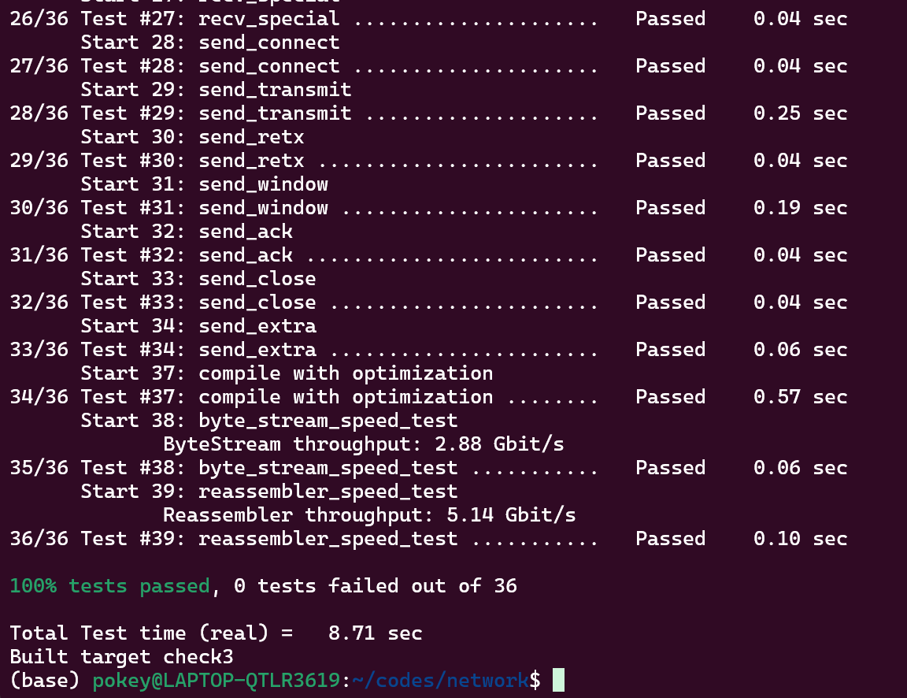

My name: 何旭
My ID: 502024330015
class TCPSender I created some private member variables.private:
// Variables initialized in constructor
ByteStream input_;
Wrap32 isn_;
uint64_t initial_RTO_ms_;
uint64_t RTO_{initial_RTO_ms_};
uint64_t ackno_{0};
uint64_t seqno_{0};
uint64_t timer_{0};
uint64_t expire_time_{0};
bool timer_flag_{false};
bool syn_sent_{false};
bool fin_sent_{false};
queue<TCPSenderMessage> outstanding_segments_{};
uint16_t window_size_{1};
uint64_t outstanding_num_{0};
uint64_t retransmission_num_{0};
RTO_ is the retransmission timeout now.ackno_ is used to record the sequence number of the next byte that needs to be acknowledged.seqno_ is used to record the sequence number of the next byte to be sent.timer_ is used to record the amount of time that the current timer has already elapsed.expire_time_ is used to record the expiration time of the current timer.timer_flag_ is used to record whether the current timer is active.syn_sent_ is used to record whether the current synchronization signal has already been sent.fin_sent_ is used to record whether the current finalization signal has already been sent.outstanding_segments_ uses a queue to record segments that have been sent but not yet acknowledged.outstanding_num_ is used to record the number of the segment in outstanding_segments_window_size_ is used to record the size of the current send window.retransmission_num_ is used to record the number of retransmissions.uint64_t TCPSender::sequence_numbers_in_flight()
just return outstanding_num_
uint64_t TCPSender::consecutive_retransmissions()
just return retransmission_num_
TCPSenderMessage TCPSender::make_empty_message()
Return a TCPSenderMessage with sequence number seqno_, syn and fin set to false, and an empty payload field.
void TCPSender::tick( uint64_t ms_since_last_tick, const TransmitFunction& transmit )
timer_ += ms_since_last_tick;
if ( timer_flag_ && timer_ >= expire_time_ ) {
transmit( outstanding_segments_.front() );
if ( window_size_ != 0 ) {
RTO_ *= 2;
}
retransmission_num_++;
timer_ = 0;
expire_time_ = RTO_;
}
First, update the value of timer_, then check whether it has exceeded expire_time_. If it has, retransmit the first element in the outstanding_segments_ queue. Additionally, if window_size_ is not zero, double the RTO_ value. Increment the retransmission count, then reset timer_ and expire_time_.
void TCPSender::push( const TransmitFunction& transmit )
Determine the size of the current available window for pushing.
uint64_t push_window;
if(window_size_ == 0){
push_window = 1;
push_window = push_window <= outstanding_num_ ? 0 : push_window - outstanding_num_;
}
else
push_window = window_size_ <= outstanding_num_ ? 0 : window_size_ - outstanding_num_;
The sum of push_window and outstanding_num_ should be equal to window_size_.Additionally, when window_size_ is zero, extra checks are required.
Proceed with subsequent operations when push_window is greater than 0, sending a certain number of bytes of data.
if (!syn_sent_){
send_msg.SYN = true;
syn_sent_ = true;
}
if (reader().has_error()){
send_msg.RST = true;
}
if ( fin_sent_ )
return;
Handle the SYN, RST, and FIN flags in the segment.
send_msg.seqno = Wrap32::wrap(seqno_,isn_);
size_t payload_size = min(TCPConfig::MAX_PAYLOAD_SIZE, push_window);
while(send_msg.sequence_length() < payload_size && reader().bytes_buffered()){
string_view str = reader().peek();
uint64_t bytes_read = min(str.size()payload_size - send_msg.sequence_length());
send_msg.payload += str.substr(0,bytes_read);
input_.reader().pop(bytes_read);
payload_size -= bytes_read;
}
Determine the seqno and payload in the segment and read from the ByteStream.
if (reader().is_finished() && send_msg.sequence_length() < push_window){
fin_sent_ = send_msg.FIN = true;
}
Check if the transmission is complete; if it is, determine whether to add the FIN flag based on the length of the segment.
if ( send_msg.sequence_length() == 0 )
return;
seqno_ += send_msg.sequence_length();
outstanding_num_ += send_msg.sequence_lengt();
outstanding_segments_.push(send_msg);
transmit(send_msg);
if (!timer_flag_) {
timer_flag_ = true;
expire_time_ = RTO_;
timer_ = 0;
}
If there is information in the segment, send it and update seqno_, outstanding_num_, and outstanding_segments_. Additionally, if timer_ is not running, start it.
Finally, update push_window again and repeat the above loop.
void TCPSender::receive( const TCPReceiverMessage& msg )
Perform the following operations upon receiving a segment.
window_size_ = msg.window_size;
if(msg.RST){
writer().set_error();
return;
}
Update window_size_ and RST based on the received segment.
Decode the sequence number of the received message and update ackno_. Also, reset RTO_ and retransmission_num_.
uint64_t abs_ackno = msg.ackno.value().unwrap(isn_,ackno_);
if(abs_ackno > seqno_ || abs_ackno <= ackno_)
return;
ackno_ = abs_ackno;
RTO_ = initial_RTO_ms_;
retransmission_num_ = 0;
If outstanding_segments_ is not empty, check if any segments in the queue can be acknowledged. Based on whether outstanding_segments_ is empty afterward, update the status of timer_.
while(!outstanding_segments_.empty()){
auto flight_msg = outstanding_segments_.front();
if(flight_msg.seqno.unwrap(isn_,ackno_) + flight_msg.sequence_length() > abs_ackno)
break;
outstanding_num_ -= flight_msg.sequence_length();
outstanding_segments_.pop();
}
if(!outstanding_segments_.empty()){
expire_time_ = RTO_;
timer_ = 0;
}
else{
timer_flag_ = false;
}
void TCPSender::push( const TransmitFunction& transmit ), I had issues with updating and initializing push_windowpush_window to 1 when window_size_ was 0, which ignored outstanding_num_. To address this, I updated it by considering whether window_size_ is zero, handling each case accordingly.